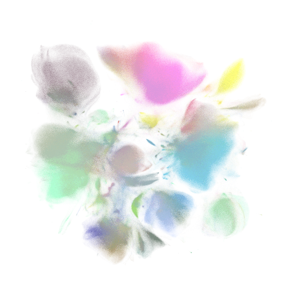
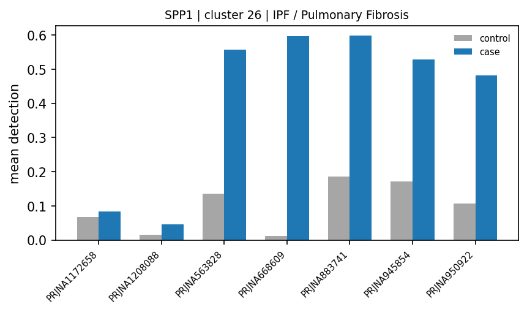
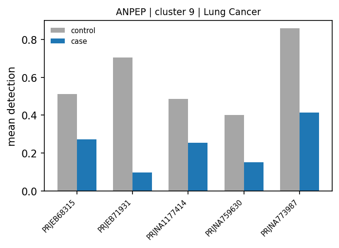

Nygen / lund university master's project update
scBaseCount lung atlas efforts
Acquisition, weak-prior clustering, integrated atlas batch correction, and full-atlas disease-marker discovery.
- 01 Data acquisition from scBaseCount
- 02 Clustering with annotation weak priors
- 03 Integrated lung atlas and batch effects
- 04 Disease-marker discovery
~15 min · open writeups/internal-atlas-deck/deck.html
Why this work
Public atlases are large, noisy, and unevenly labeled
We need a reproducible path from scBaseCount files to an integrated lung view, without treating imperfect labels as truth.
- Hard gates on download, QC, and metadata before anything is “in the atlas.”
- Clustering that uses existing cell_type labels as weak priors, not ground truth.
- Measured batch correction on a multi-study lung concat.
- Study-aware disease discovery that produces a traceable candidate review queue.
1 · Data acquisition
Pipeline sketch
From the scBaseCount snapshot into an integrated lung atlas.
Builds the accession catalog that concat is allowed to download. Gate is lung tissue (plus study size / multi-organ excludes), not disease ∩ tissue. Detail on next slide.
1 · Data acquisition
How samples enter the datasets list
Start from human GeneFull sample_metadata.parquet. Only rows that pass these gates become download candidates for the atlas.
- Drop non-SRA/ENA accessions (NRX*).
- Keep rows whose tissue matches a lung regex (lung, airway, BAL, trachea, …). No disease filter here.
- Attach study_accession via ENA read_experiment.
- Drop a short list of known multi-organ / broad studies.
- Drop studies with < 1,000 total cells across their lung samples.
Result: ~1.8k SRXs in the datasets list. COVID+blood never enters (tissue fails). Healthy / control / unsure lung samples can enter. File-level QC still happens later in h5ad_concat.
1 · Data acquisition
Scale reached
- ~78% of attempted files pass concat gates; the rest fail explicit checks (later slide).
1 · Data acquisition
Challenges
Metadata and file quality are the bottleneck, not transfer speed.
- Thin / noisy free-text disease and tissue fields; synonymy across studies.
- Lung-disease labels often sit on non-lung tissue (e.g. COVID on blood/PBMC); tissue gate is why those stay out.
- study_accession as batch key collapses donor, disease, and grade into one “batch.”
- Many files missing all cell_type (~half of concat skips).
- QC can drop large fractions of cells.
1 · Data acquisition
scBaseCount disease labels can disagree with BioSample attributes
Many h5ads in PRJNA563828 (IPF Cell Atlas) are present in scBaseCount, but the disease labels in scBaseCount do not always agree with NCBI. Improving disease labelling via NCBI allows for more accurate DGE down the line.
Failure case: SRX17412810 → SAMN12688818 (ENA sample → BioSample efetch). Parquet bags IPF+COPD+control; BioSample says COPD.
| srx_accession | SRX17412810 |
|---|---|
| disease | Idiopathic pulmonary fibrosis (IPF), chronic obstructive pulmonary disease (COPD), healthy control |
| tissue | lung |
| disease_ontology_term_id | MONDO:0800504 → idiopathic pulmonary fibrosis MONDO:0005002 → chronic obstructive pulmonary disease |
| tissue_ontology_term_id | UBERON:0002048 → lung |
<BioSample accession="SAMN12688818"> <Title>192CO scRNAseq</Title> <Attributes> <Attribute attribute_name="source_name">Whole Lung Dissociate</Attribute> <Attribute attribute_name="tissue">Whole Lung Dissociate</Attribute> <Attribute attribute_name="disease">COPD</Attribute> <Attribute attribute_name="Sex">male</Attribute> <Attribute attribute_name="age">66</Attribute> </Attributes> </BioSample>
Why fetch context anyway: clean IPF/COPD/Control strings, mismatch checks on the baggy minority, and study text for CyteType. Path: study_context → efetch?db=biosample. Ontologies via ontology_lookup (MONDO 2026-07-06).
1 · Data acquisition
Learnings: curation is a filter stack
- Enforce MD5, accession match, ≥1 cell_type, minGenesPerCell=200, mito cap, minCellsAfterQc / minPctCellsAfterQc (keep ≥50% of cells), STAR gene axis.
- Skip mix: missing labels, too few cells, excessive dropout (~78% pass).
- Main idea: do not “download the atlas.” Decide what is allowed in, file by file.
2 · Clustering
Annotations as weak priors, not truth
cell_type labels are CELLxGENE / CXG-aligned curated labels. Useful structure, not ground truth. Using them as both prior and sole evaluation creates circularity.
Resolution chosen by maximizing matched Jaccard against the weak prior.
2 · Clustering
What this buys you
- Resolution adapts to label granularity without hard-coding a single value.
- RF out-of-fold merges collapse unstable splits.
- Agreement metrics (NMI, ARI, NSE, …) show when priors are coarse bins vs when clusters carve finer structure.
2 · Clustering
Evidence snapshot
- Clustering + CyteType at scale on the order of ~113 accessions in writeups.
- Pattern: tight priors (e.g. neutrophils) align well; broad bins systematically disagree and invite splits.
- Depth for Q&A: CyteScore / CyteOnto comparisons and per-type NSE.
3 · Integrated atlas
Integration design
One lung atlas, batch key study_accession.
- Calibrate on a 100k study-proportional sample → scIB validate → Harmony production on the full atlas.
- Caveat baked in: study-level batches fold biology (donor, disease) into “batch.”
3 · Integrated atlas
Why BioProject (PRJNA*) matters
A BioProject is a collection of biological data related to a single initiative from one organization or consortium. Accessions look like PRJNA563828.
- That study id is our batch key: cells from the same initiative share lab, protocol, and donor structure.
- Harmony mixes on study_accession, and DE prefers same-study diseased vs control contrasts.
- scBaseCount does not ship this field. The sample parquet has no BioProject / study column, so we resolve SRX* → ENA study_accession ourselves when building the datasets list.
Without that join, “batch” and “same study” are undefined for the atlas. That is the metadata processing the next plots depend on.
3 · Integrated atlas
BioProject is a good batch key (scIB)
On the 100k study-proportional sample, Harmony keyed by study beats finer keys on the overall tradeoff. Matching eval: correct and score on the same batch definition.
| Correction (matched eval) | Batch Δ | Bio Δ | Total Δ | # batches |
|---|---|---|---|---|
| Study | +0.167 | −0.024 | +0.052 | 172 |
| Study × tech | +0.162 | −0.027 | +0.049 | 197 |
| SRX (experiment) | +0.089 | −0.037 | +0.013 | 1,409 |
- Study and study×tech are nearly the same; finer SRX correction costs more biology for less total gain.
- Even when scored against SRX, SRX’s batch edge is tiny (0.392 vs 0.389 study) with worse bio (0.496 vs 0.511).
Source: output/atlas/v2/post/batch_key_comparison/. SRX often mixes technical batch with donor / condition biology.
3 · Integrated atlas
Atlas batch correction by study (PRJNA)
UMAP colored by cell_type: uncorrected vs Harmony. Interim production plots; replace later with transparent versions under the same filenames.

scIB on 100k sample; modest bio cost for clearer batch mixing.
3 · Integrated atlas
Production outcome
- UMAPs show source cell_type on the integrated embedding, not cluster IDs.
- Approved knobs from parameter selection + subset scIB validation.
4 · Disease-marker DE
Why DE on the atlas
Integrated clusters plus ontology-derived disease / control labels enable study-aware contrasts, not just global marker fishing.
- Prefer same-study diseased vs control where support exists.
- Also screen restricted genes and unexpected expression candidates.
4 · Disease-marker DE
Full atlas · completedProduction discovery is complete
- Case / control profiles come from overlapping studies; models adjust for study when support allows.
- The review queue contains 20 primary and 40 extended candidates, plus 7 cluster-restricted genes.
- Power is uneven: IPF contributes 19,971 hits; cystic fibrosis contrasts use 2 studies; pulmonary hypertension yields 5 hits.
Automated shortlist for manual review. Expression evidence alone does not establish novelty or mechanism.
4 · Disease-marker DE
Full atlas · study profilesThe effects remain inspectable study by study


Bars show mean detection within each study. These are traceable candidates, not independent validation.
4 · Disease-marker DE
Hypotheses · not validatedThree leads worth following up
The goal is a small, auditable review queue, not a catalogue of significant genes.
IPF recovers a coherent remodeling axis
POSTN +4.02, SPP1 +2.61 and MMP7 +2.55, while SFTPC −3.20. The contrasts span 7–9 studies.
ANPEP falls in lung-cancer macrophages
Resolved macrophage cluster 9: log2FC −1.57; detection 26% vs 58% in controls; 5/5 studies agree.
SCGB1A1 loss is cancer-skewed
Cluster 20: log2FC −8.34 in lung cancer, compared with −1.05 in IPF. First resolve the mixed cluster label.
What is cluster 32?
SYT4, TMEM151A, LINC02360 and SERTM1 are detected in 20–26% of c32 vs <5% elsewhere, but source labels are mixed.
Next checks: leave-one-study-out stability, donor / technology covariates, finer cluster annotation and held-out data.
Takeaways
Where we are
- Acquisition needs hard gates; metadata lies until checked.
- Weak priors guide clustering without becoming truth.
- Harmony improves batch metrics with a modest bio cost.
- Full-atlas DE now produces a traceable review queue, not biological claims.
Open: prior vs held-out truth; study-level batch key limits; which candidates survive leave-one-study-out and external validation.
Downstream TODO: run this path on Scarf. AnnData-style workflows carry nearly ~100 GB of disk overhead and leave server headroom tight; Scarf’s sparse / out-of-core design is the natural fit once discovery methods stabilize.